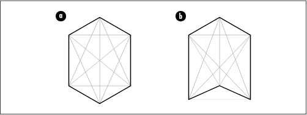
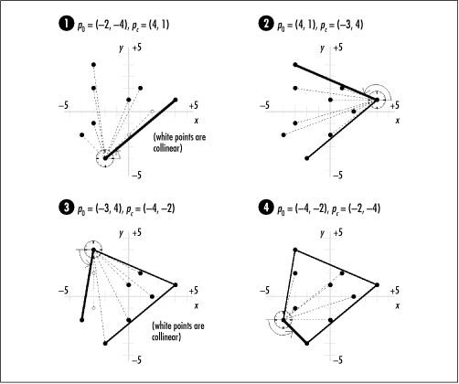
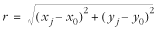

17.4 Description of Convex
Hulls
The convex hull of a
set of points is the smallest convex
polygon that encloses all points in the set. A polygon is
convex if any line segment connecting two points inside the
polygon lies completely inside the polygon itself (see Figure
17.3a); otherwise, the polygon is concave (see
Figure
17.3b). To picture the convex hull for a set of points,
imagine a series of pegs on a board. If we wrap a string
tightly around the outermost pegs, the shape of the string is
the convex hull.

17.4.1 Jarvis's March
One way to construct the convex hull for a
set of points P is to use a
method called Jarvis's march.
Jarvis's
march constructs a convex hull in two sections, called the
right chain and left chain. The right chain consists
of all points in the convex hull from the lowest point (the
one with the smallest y-coordinate) to the highest. If two
points are equally low, the lowest point is considered to be
the one that is also the furthest to the left (the one with
the smallest x-coordinate). The
left chain consists of all points from the highest point back
to the lowest. If two points are equally high, the highest
point is considered to be the one that is also the furthest to
the right.
We begin by finding the lowest point in P (as described a moment ago), adding
it to the convex hull, and initializing another variable,
p0, to it. Next, we
look at each point pi in P, excluding p0, and locate the point
pc that is clockwise from all
others with respect to p0. Picture a clock face
centered on p0. In
the right chain, we start at the 3 o'clock position and sweep
counterclockwise until we encounter a point. In the left
chain, we start at 9 o'clock and sweep counterclockwise. Once
we find pc , we add it to the
convex hull, we set p0 to pc , and repeat the process until
p0 is the point at
which we started.
Returning to the peg analogy, in the right
chain, selecting each point pc
is similar to tying a string to the current p0, pulling it taut to the
right, and then advancing the string counterclockwise until it
touches another point. In the left chain, the process is
similar to pulling the string taut to the left before
advancing it counterclockwise. Figure
17.4 illustrates this process.

Computationally, to determine the point
clockwise from all other points with respect to p0, we traverse each point
pi in P, except p0, and keep track of the
best choice for pc as we go.
For each pi in P, we compare the orientation of
pi relative to the pc we have found thus far using the
expression for z that follows.
If z is greater than 0, pi is clockwise from pc with respect to p0, and we reset pc to the current pi. One nice thing about this
approach is that we do not need to worry about whether we are
computing the right or left chain, as the mathematics handles
this for us.
z = ( xi -
x 0 ) ( yc - y0 ) - (
yi - y0 ) ( xc -
x0 )
One special case occurs when z is 0. This means that pi and pc are collinear with respect to
p0. In this case,
the most clockwise point is considered to be the one furthest
from p0 (in Figure
17.4, see the computation of z where p0 = (-2, -4), pi = (0, -2), and pc = (2, 0) in step 1, and where
p0 = (-3, 4), pi = (-3, 2), and pc = (-3, -1) in step 3). To
determine the distance r
between p0 = (x0, y0 ) and a point p j =
(x j , y
j ), where p j is
either p i or pc, we use the following
equation:
 |